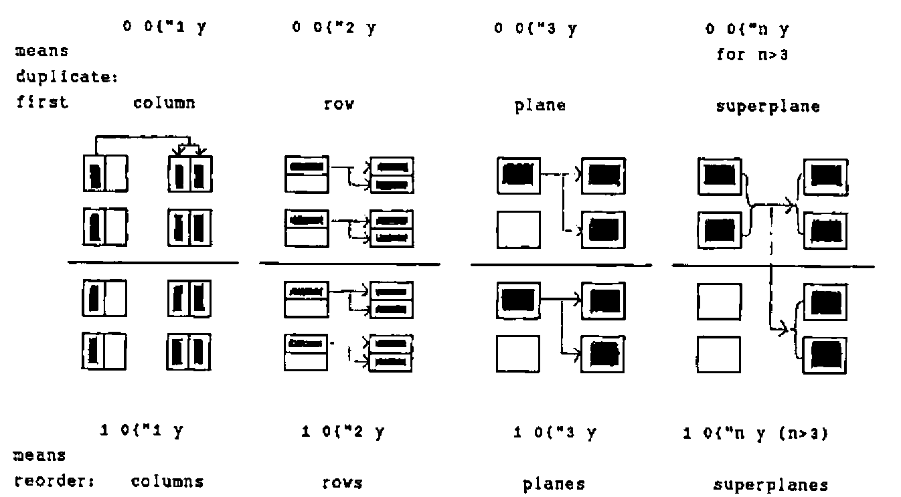
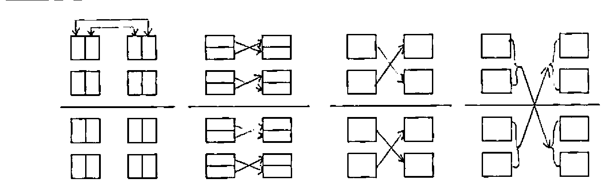
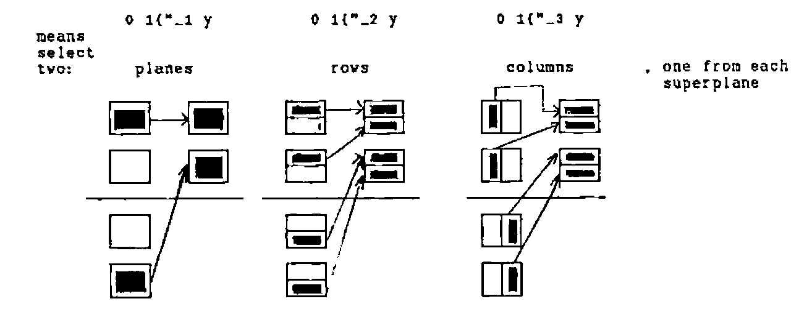

J-ottings 11
Vector 13:2, page 37
Transcribed from the printed issue; not yet reviewed. Read it in the PDF of the issue, page 37
In [1], Chris Burke outlines the concepts of frame and cell which underlie J data construction in general and the J rank conjunction in particular. One possible sub-structuring of b=.i.2 3 4 is that of six 1-cells laid out in a 2 by 3 frame thus:
┌───────────┬───────────┬───────────┐
│ 0 1 2 3│ 4 5 6 7│ 8 9 10 11│
├───────────┼───────────┼───────────┤
│12 13 14 15│16 17 18 19│21 22 23 24│
└───────────┴───────────┴───────────┘
The rank conjunction joins a verb and an integer k. Applying ravel joined to various rank conjuncts reveals much about the nature of rank in J, as the following table shows:
n=
frame-size cell-size b contains frame-rank $,"n b
i.0 2 3 4 1 3-cell 0 2 3 4 1
2 3 4 2 2-cells 1 2 3 4
2 3 4 6 1-cells 2 2 12
2 3 4 i.0 24 0-cells 3 24
Chris did not mention that the integer conjunct of rank can be negative, which allows the application of its verb to be thought of in terms of frames. For example ,"_2 b means "apply ravel to the rank-2 frames", which in the case of a rank-3 object is the same as applying it to the 1-cells. For rank-3 objects such as b, a table of equivalences for ,"m b is as follows:
m in ,"m b Shape Notes
0 _n 2 3 4 1 where n>2
1 _2 2 3 4 b-:,"1 b is true for all arrays
2 _1 2 12 first row is i.12
3 0 24 same as APL ravel
Other monadic verbs behave in ways which now become readily predictable. If y=.i.2 2 2 2, +/"2 y is equivalent to +/"_2 y, and means sum down the columns of the 2-cells, of which the first is the matrix
In full, +/"2 y is
+/"_1 y means take the 1-frames, or equivalently the two 3-cells, each of which is of rank 3, and the first of which is
and add along the first axis. The result of this addition for the first 3-cell is
and the full result of +/"_1 is
Next, consider the rank conjunction applied to from ({). Ringing changes on the indices can be used as a means of replicating or re-ordering the various dimensions. This is described more easily in diagrams than in words. In each sub-diagram the original matrix is shown on the left.

1 0{"1 y, 1 0{"2 y, 1 0{"3 y and 1 0{"n y (n>3) mean reorder columns, rows, planes and superplanes:

Frame-based indexing is a little different, since it has the effect of rank reduction, and also, unlike the cell-based index vectors which may be of any length, the length of the indices for negative rank conjuncts must now match the length of the first axis.
0 1{"_1 y, 0 1{"_2 y and 0 1{"_3 y mean select two planes, rows and columns, one from each superplane:

There are interesting relations with "squad" indexing in zero origin in APL2. These are given in the following table of equivalences:
duplicates first:
y 0 0{"0 y
( ⊂0 0) ⌷[3] y 0 0{"1 y columns
( ⊂0 0) ⌷[2] y 0 0{"2 y rows
( ⊂0 0) ⌷[1] y 0 0{"3 y planes
( ⊂0 0) ⌷[0] y 0 0{"n y superplane
where n>3 including _ (infinity)
Note: For the case {"0 a, 0 and (#a)$0 are the only valid indices.
APL2 axis qualification is frame- rather than cell-oriented in the sense that axes are counted from major to minor, whereas cells are reckoned in a bottom-up fashion.
For negative rank conjuncts, the situation is a little different, and is best illustrated by changing the data to an array in which all the dimensions are of different magnititude. Setting z=.i.2 3 4 5, we have
with the same selection in
each superplane, select two:
( ⊃( ⊂4 5)⍴¨⊂2 1) ⌷¨⊂[1]z 2 1{"_1 z planes
( ⊃( ⊂3 5)⍴¨⊂3 3) ⌷¨⊂[2]z 3 3{"_2 z rows
( ⊃( ⊂3 4)⍴¨⊂4 3) ⌷¨⊂[3]z 4 3{"_3 z columns
z 0 0{"_n z
where n<_3 including __ is equivalent to
0 0{"0 - see note below previous table.
The indices 2 1, 3 3 and 4 3 above are abitrary, but they must be valid so as not to create index errors. It looks as though the above series might be extended upwards so that for example ( ⊃( ⊂4 5)⍴¨⊂1 0 1) ⌷¨⊂[0]z, which constructs a single super-plane with a mixture of planes (1 0 1) from each of the superplanes of z, might have an equivalent using {"0, but this is not the case. To achieve this in J, it is necessary to index superplanes explicitly using a more general scattering indexing technique:
Reference¶
[1] APL and J(1) – Function Rank, Chris Burke, Vector Vol.13, No. 1 pp.96-101